library(dplyr)
library(deSolve)
library(ggplot2)
library(gt)
library(tidyr)Practical 2
Incidence
sir_model <- function(time, compartments, parameters) {
with(as.list(c(compartments, parameters)), {
dS <- -par_beta * S * I / par_N
dI <- par_beta * S * I / par_N - par_gamma * I
dR <- par_gamma * I
dC <- par_rho * par_beta * S * I / par_N
list(c(dS, dI, dR, dC))
})
}
# Initial values
par_N <- 10000
SIR_compartments <- c(S = 9999, I = 1, R = 0, C = 0)
# Parameters
SIR_parameters <- c(
par_beta = 1.25, # transmission rate
par_gamma = 1/2, # recovery rate
par_N = par_N,
par_rho = 0.75
)
stop_time <- 75
# Time points
times <- seq(0, stop_time, by = 1/8)
# Solve ODE
out <- ode(
y = SIR_compartments,
times = times,
func = sir_model,
parms = SIR_parameters
) |> as.data.frame()
tidy_out_sir <- out |>
pivot_longer(-time, names_to = "Compartment") |>
mutate(model = "SIR")point_df <- out |> filter(time %in% 0:30)
ggplot(out |>filter(time %in% 0:30), aes(time, C)) +
geom_line(linewidth = 2, colour = "#1979B0") +
geom_point(data = point_df, colour = "#590821", size = 2) +
labs(x = "Time (days)", y = "Reported cases (people)") +
theme_classic() +
theme(axis.line = element_line(colour = "grey65"))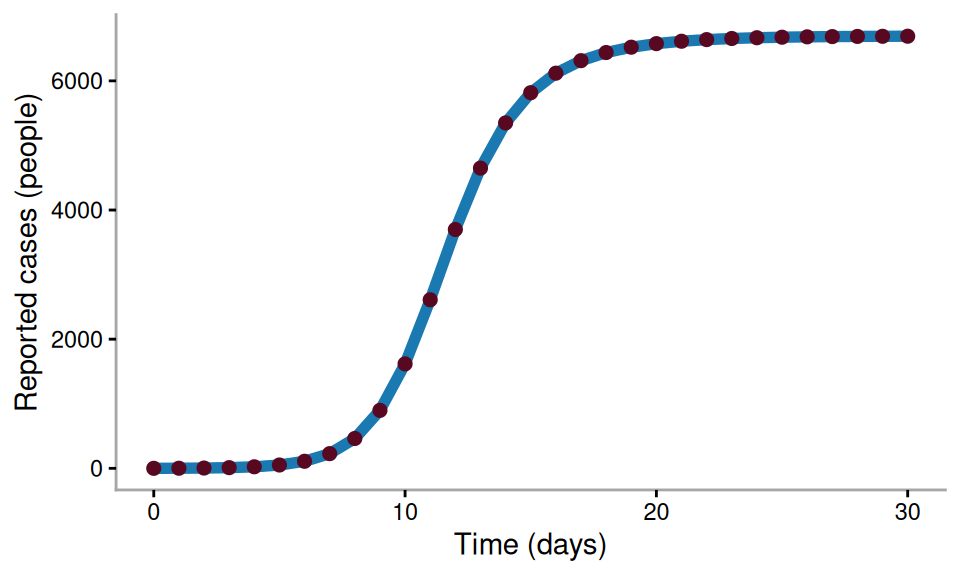
ggsave("./plots/new_reported_cases.pdf", width = 5, height = 3)incidence_df <- out |> filter(time %in% 0:30) |>
select(time, C) |>
mutate(delta_C = C - lag(C))
ggplot(incidence_df, aes(time, delta_C)) +
geom_line(colour = "#590821", alpha = 0.5) +
geom_point(size = 2, colour = "#590821") +
labs(x = "Time (days)", y = "Reported incidence (cases/day)") +
theme_classic() +
theme(axis.line = element_line(colour = "grey65"))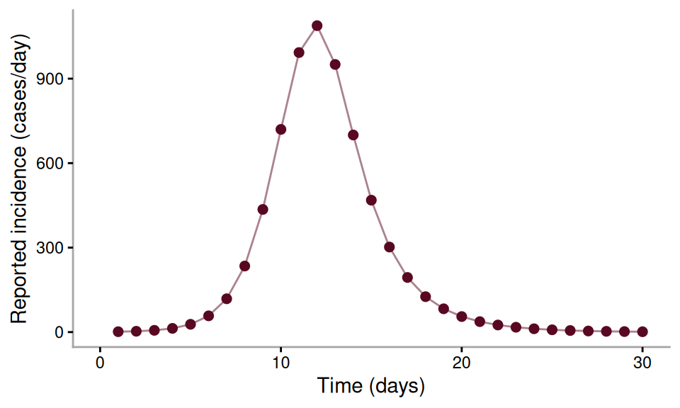
ggsave("./plots/discrete_reported_cases.pdf", width = 5, height = 3)SEIR
seir_model <- function(time, compartments, parameters) {
with(as.list(c(compartments, parameters)), {
dS <- -par_beta * S * I / par_N
dE <- par_beta * S * I / par_N - par_sigma * E
dI <- par_sigma * E - par_gamma * I
dR <- par_gamma * I
dC <- par_rho * par_sigma * E
list(c(dS, dE, dI, dR, dC))
})
}
# Initial values
par_N <- 10000
compartments <- c(S = 9999, E = 0,
I = 1,
R = 0,
C = 0)
# Parameters
parameters <- c(
par_beta = 1.25, # transmission rate
par_sigma = 1/2, # rate of onset of illness
par_gamma = 1/2, # recovery rate
par_N = par_N,
par_rho = 0.75
)
stop_time <- 75
# Time points
times <- seq(0, stop_time, by = 1/8)
# Solve ODE
out_seir <- ode(
y = compartments,
times = times,
func = seir_model,
parms = parameters
) |> as.data.frame()tidy_out_seir <- out_seir |>
pivot_longer(-time, names_to = "Compartment") |>
mutate(model = "SEIR")
df <- bind_rows(tidy_out_sir, tidy_out_seir) |>
filter(Compartment != "C") |>
mutate(Compartment = factor(Compartment, levels = c("S", "E", "I", "R")))
ggplot(df, aes(time, value / par_N)) +
geom_line(aes(colour = model), linewidth = 1.5) +
facet_wrap(~Compartment, scales = "free") +
scale_colour_manual(values = c("SIR" = "grey70", "SEIR" = "#1979B0")) +
scale_y_continuous(limits = c(0, NA)) +
labs(x= "Time (days)",
y = "Value (fraction)") +
theme_classic() +
theme(legend.position = "top",
axis.line = element_line(colour = "grey65"))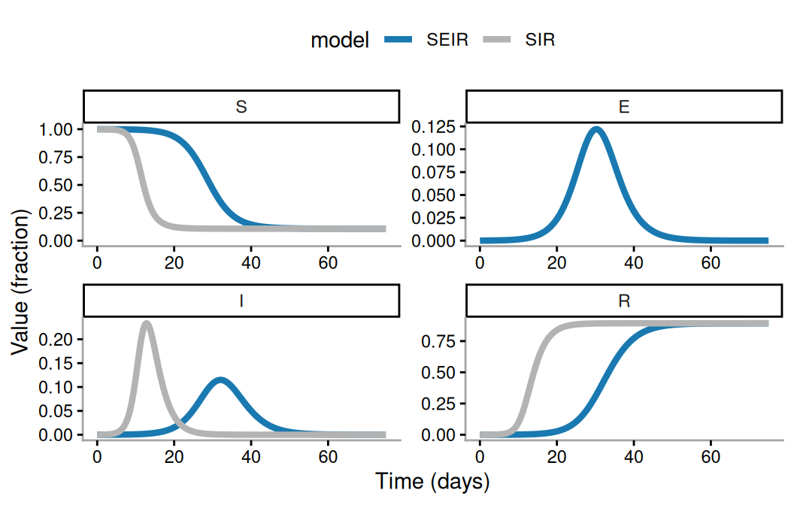
ggsave("./plots/SEIR_sim.pdf", width = 5.5, height = 3.5)# Solve ODE
SIR_parameters["par_beta"] <- 0.625
SIR_parameters["par_gamma"] <- 0.25 # 1/4
SIR_parameters["par_rho"] <- 0.64 # 1/4
I0 <- 0.07
SIR_compartments["I"] <- I0
SIR_compartments["S"] <- par_N - I0
out_sir2 <- ode(
y = SIR_compartments,
times = times,
func = sir_model,
parms = SIR_parameters
) |> as.data.frame()
incidence_sir_2 <- out_sir2 |>
select(time, C) |>
mutate(delta_C = C - lag(C),
model = "SIR")incidence_seir_df <- out_seir |>
select(time, C) |>
mutate(delta_C = C - lag(C),
model = "SEIR")
comparison_incidence_df <- bind_rows(incidence_sir_2,
incidence_seir_df)
ggplot(comparison_incidence_df, aes(time, delta_C)) +
geom_line(aes(colour = model, group = model), linewidth = 2) +
scale_colour_manual(values = c("SIR" = "grey70", "SEIR" = "#1979B0")) +
labs(x = "Time (days)", y = "Reported incidence (cases/day)") +
theme_classic() +
theme(axis.line = element_line(colour = "grey65"),
legend.position = "inside",
legend.position.inside = c(0.75, 0.8))Warning: Removed 2 rows containing missing values or values outside the scale range
(`geom_line()`).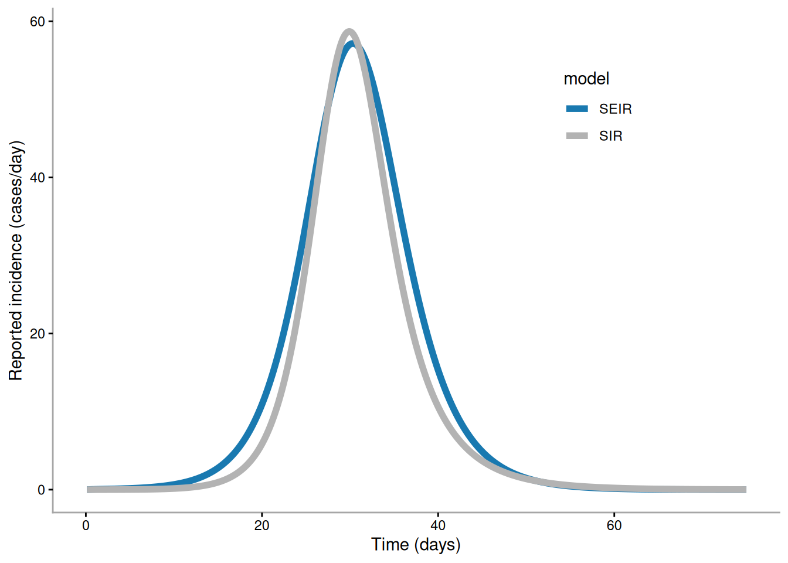
ggsave("./plots/incidence_comparison.pdf", width = 5.5, height = 3.5)Warning: Removed 2 rows containing missing values or values outside the scale range
(`geom_line()`).param_table <- data.frame(
model = c("SIR", "SEIR"),
beta = c(0.625, 1.25),
gamma = c(0.25, 1/2),
sigma = c(NA, 1/2),
I0 = c(0.07, 1),
rho = c(0.64, 0.75)
)
param_table$R0 <- param_table$beta / param_table$gamma
param_table$mean_generation_time <- c(
1 / param_table$gamma[param_table$model == "SIR"],
1 / param_table$sigma[param_table$model == "SEIR"] +
1 / param_table$gamma[param_table$model == "SEIR"]
)param_table |>
gt() |>
fmt_number(
columns = c(beta, gamma, sigma, I0, rho, R0, mean_generation_time),
decimals = 2
) |>
cols_label(
model = "Model",
beta = html("β"),
gamma = html("γ"),
sigma = html("σ"),
I0 = html("I<sub>0</sub>"),
rho = html("ρ"),
R0 = html("R<sub>0</sub>"),
mean_generation_time = "Mean generation time"
) |>
sub_missing(
columns = everything(),
missing_text = "—"
)| Model | β | γ | σ | I0 | ρ | R0 | Mean generation time |
|---|---|---|---|---|---|---|---|
| SIR | 0.62 | 0.25 | — | 0.07 | 0.64 | 2.50 | 4.00 |
| SEIR | 1.25 | 0.50 | 0.50 | 1.00 | 0.75 | 2.50 | 4.00 |
SIR with demography
sir_demo_model <- function(time, compartments, parameters) {
with(as.list(c(compartments, parameters)), {
N <- S + I + R
dS <- par_mu * N - par_beta * S * I / N - par_mu * S
dI <- par_beta * S * I / N - par_gamma * I - par_mu * I
dR <- par_gamma * I - par_mu * R
list(c(dS, dI, dR))
})
}
par_N <- 10000000
SIR_demo_compartments <- c(
S = par_N - 1e-6 * par_N,
I = 1e-6 * par_N,
R = 0
)
beta_val <- 10 / 7
gamma_val <- 1 / 7
mu_val <- 1 / (70 * 365)
SIR_demo_parameters <- c(
par_beta = beta_val,
par_gamma = gamma_val,
par_mu = mu_val
)
stop_time <- 100 * 365
times_SIR_demo <- seq(0, stop_time, by = 1)
# Solve ODE
out_sir_demo <- ode(
y = SIR_demo_compartments,
times = times_SIR_demo,
func = sir_demo_model,
parms = SIR_demo_parameters,
method = "lsoda"
) |> as.data.frame()
tidy_out_sir_demo <-out_sir_demo |>
pivot_longer(-time, names_to = "Compartment") |>
mutate(model = "SIR demography",
Compartment = factor(Compartment, levels = c("S", "I", "R")))ggplot(tidy_out_sir_demo, aes(x = time / 365, y = value/par_N)) +
geom_line(aes(group = Compartment, colour = Compartment), linewidth = 2) +
scale_colour_manual(values = c("S" = "#5B573A",
"I" = "#C96C3D",
"R" = "#4C2218")) +
facet_wrap(~Compartment, scales = "free", ncol = 1) +
labs(x = "Time (years)", y = "Value (fraction)") +
theme_classic() +
theme(axis.line = element_line(colour = "grey65"),
legend.position = "none")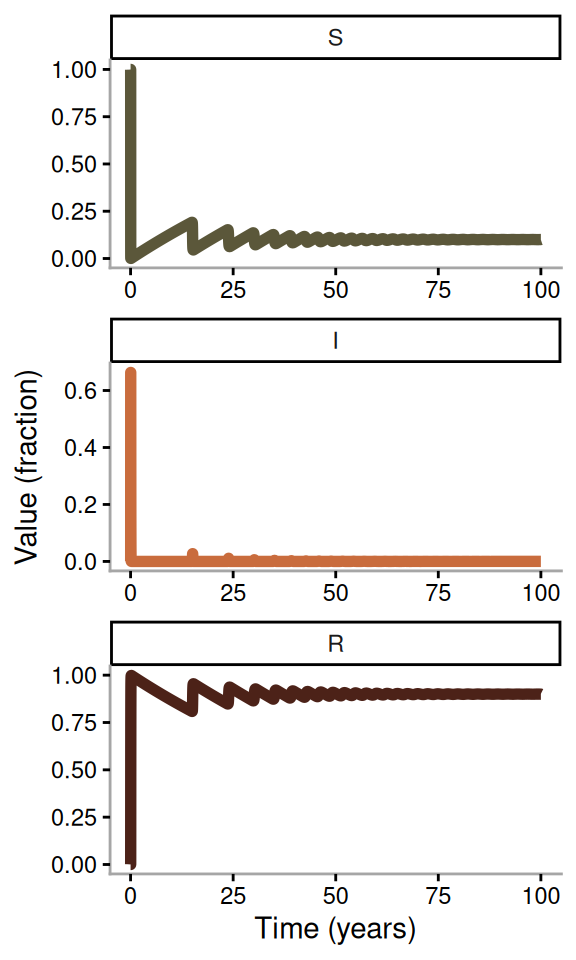
ggsave("./plots/SIR_demographics.pdf", width = 7, height = 5)R0_val <- beta_val / (gamma_val + mu_val)
Rt_df <- tidy_out_sir_demo |> filter(Compartment == "S") |>
mutate(value = R0_val * value / par_N ,
Compartment = ifelse(Compartment == "S", "r_t", Compartment))
h_df <- data.frame(Compartment = "r_t",
y_val = 1)
ggplot(Rt_df, aes(time / 365, value)) +
geom_line(aes(colour = Compartment), linewidth = 1.5) +
scale_colour_manual(values = c(r_t = "#5B573A",
i = "#C96C3D")) +
geom_hline(data = h_df, aes(yintercept = y_val), linetype = "dashed",
alpha = 0.5) +
scale_y_continuous(limits = c(0, NA)) +
labs(x = "Time (Years)", y = "r_t") +
theme_classic() +
theme(axis.line = element_line(colour = "grey65"),
legend.position = "none")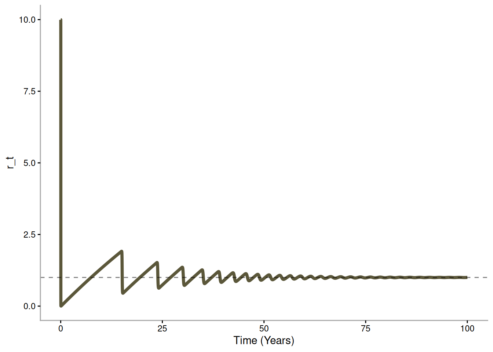
ggsave("./plots/SIR_demographics_rt.pdf", width = 7, height = 4)df <- tidy_out_sir_demo |> filter(Compartment == "I")
ggplot(df,
aes(x = time / 365, y = value/par_N)) +
geom_line(aes(group = Compartment, colour = Compartment), linewidth = 2) +
scale_colour_manual(values = c("S" = "#5B573A",
"I" = "#C96C3D",
"R" = "#4C2218")) +
labs(x = "Time (years)", y = "Value (fraction)",
subtitle = "Infectious proportion (i)") +
theme_classic() +
theme(axis.line = element_line(colour = "grey65"),
legend.position = "none")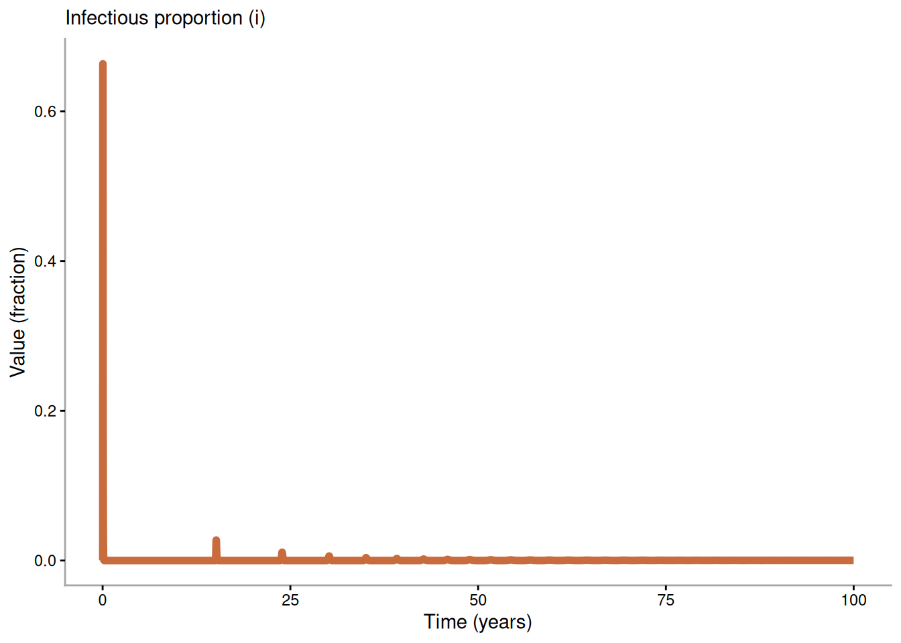
ggsave("./plots/SIR_demographics_i.pdf", width = 5, height = 2)df2 <- df |> filter(time < 40)
ggplot(df2, aes(x = time, y = value/par_N)) +
geom_line(aes(group = Compartment, colour = Compartment), linewidth = 2) +
scale_colour_manual(values = c("S" = "#5B573A",
"I" = "#C96C3D",
"R" = "#4C2218")) +
labs(x = "Time (days)", y = "Value (fraction)",
subtitle = "Infectious proportion (i)") +
theme_classic() +
theme(axis.line = element_line(colour = "grey65"),
legend.position = "none")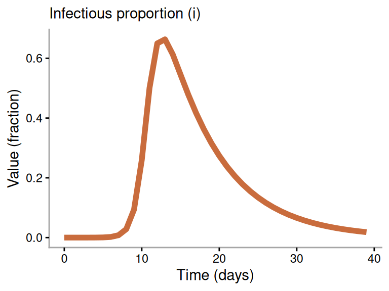
ggsave("./plots/SIR_demographics_i_part_1.pdf", width = 4, height = 3)df3 <- df |> filter(time > 70 * 365)
ggplot(df3,
aes(x = time / 365, y = value/par_N)) +
geom_line(aes(group = Compartment, colour = Compartment), linewidth = 2) +
scale_colour_manual(values = c("S" = "#5B573A",
"I" = "#C96C3D",
"R" = "#4C2218")) +
labs(x = "Time (years)", y = "Value (fraction)",
subtitle = "Infectious proportion (i)") +
theme_classic() +
theme(axis.line = element_line(colour = "grey65"),
legend.position = "none")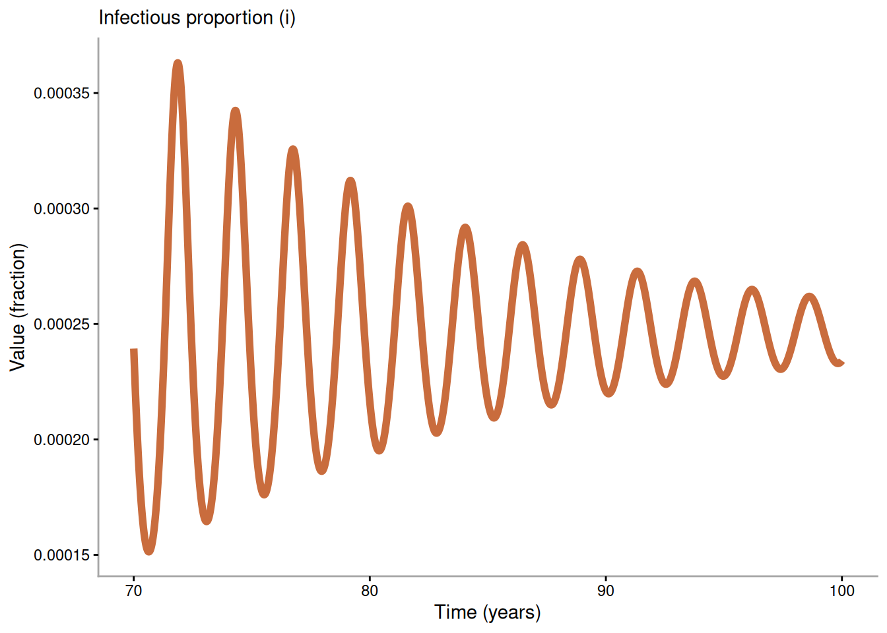
ggsave("./plots/SIR_demographics_i_part_2.pdf", width = 4, height = 3)Vaccination
# Initial values
par_N <- 10000
compartments <- c(S = 0.4 * par_N - 1, I = 1, R = 0.6 * par_N, C = 0)
# Parameters
parameters <- c(
par_beta = 1.25, # transmission rate
par_gamma = 1/2, # recovery rate
par_psi = 0,
par_rho = 0.75,
par_N = par_N
)
# Time points
times <- seq(0, 40, by = 1/8)
# Herd-immunity threshold (HIT)
out_HIT <- ode(
y = compartments,
times = times,
func = sir_model,
parms = parameters
) |> as.data.frame()tidy_HIT <- out_HIT |>
select(-C) |>
pivot_longer(-time, names_to = "Compartment")
tidy_HIT_norm <- tidy_HIT |>
mutate(value = value / par_N,
Compartment = factor(Compartment, levels = c("S", "I", "R")))
text_df <- data.frame(
Compartment = factor(c("S", "I", "R"), levels = c("S", "I", "R")),
label = c("Susceptible", "Infectious", "Recovered"),
xpos = rep(6, 3),
ypos = c(4400, 400, 5600) / par_N)
ggplot(tidy_HIT_norm, aes(x = time, y = value)) +
geom_line(aes(group = Compartment, colour = Compartment), linewidth = 2) +
geom_text(data = text_df, aes(label = label, x = xpos, y = ypos,
colour = Compartment), size = 7, hjust = 0) +
scale_colour_manual(values = c("S" = "#5B573A",
"I" = "#C96C3D",
"R" = "#4C2218")) +
facet_wrap(~Compartment) +
labs(x = "Time (days)", y = "Value (fraction)") +
theme_classic() +
theme(axis.line = element_line(colour = "grey65"),
legend.position = "none",
strip.background = element_blank(),
strip.text = element_blank())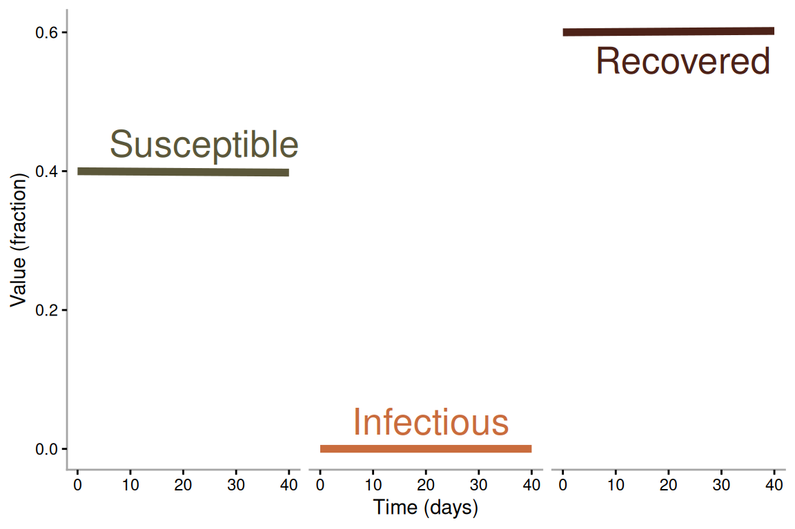
ggsave("./plots/HIT.pdf", width = 6, height = 4)sir_vac_model <- function(time, compartments, parameters) {
with(as.list(c(compartments, parameters)), {
dS <- -par_beta * S * I / par_N - par_psi * S
dI <- par_beta * S * I / par_N - par_gamma * I
dR <- par_gamma * I
dV <- par_psi * S
list(c(dS, dI, dR, dV))
})
}# Initial values
par_N <- 10000
compartments <- c(S = par_N - 1, I = 1, R = 0, V = 0)
# Parameters
parameters <- c(
par_beta = 1.25, # transmission rate
par_gamma = 1/2, # recovery rate
par_psi = 0.03,
par_N = par_N
)
# Time points
times <- seq(0, 180, by = 1/8)
out_vac <- ode(
y = compartments,
times = times,
func = sir_vac_model,
parms = parameters
) |> as.data.frame()tidy_vac <- out_vac |>
pivot_longer(-time, names_to = "Compartment") |>
mutate(value = value / par_N)
text_df <- data.frame(
Compartment = c("S", "I", "R", "V"),
label = c("Susceptible", "Infectious", "Recovered", "Vaccinated"),
xpos = c(100, 25, 100, 100),
ypos = c(1000, 600, 5000, 6500) / par_N)
ggplot(tidy_vac, aes(x = time, y = value)) +
geom_line(aes(group = Compartment, colour = Compartment), linewidth = 2) +
geom_text(data = text_df, aes(label = label, x = xpos, y = ypos,
colour = Compartment), size = 7, hjust = 0) +
scale_colour_manual(values = c("S" = "#5B573A",
"I" = "#C96C3D",
"R" = "#4C2218",
"V" = "#A88B4A")) +
labs(x = "Time (days)", y = "Value (fraction)") +
geom_hline(yintercept = 0.89, linetype = "dotted", colour = "grey50") +
theme_classic() +
theme(axis.line = element_line(colour = "grey65"),
legend.position = "none")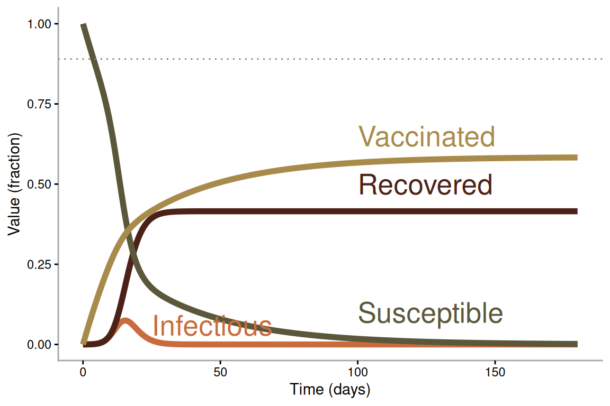
ggsave(filename = "./plots/vaccination.pdf", width = 6, height = 4)